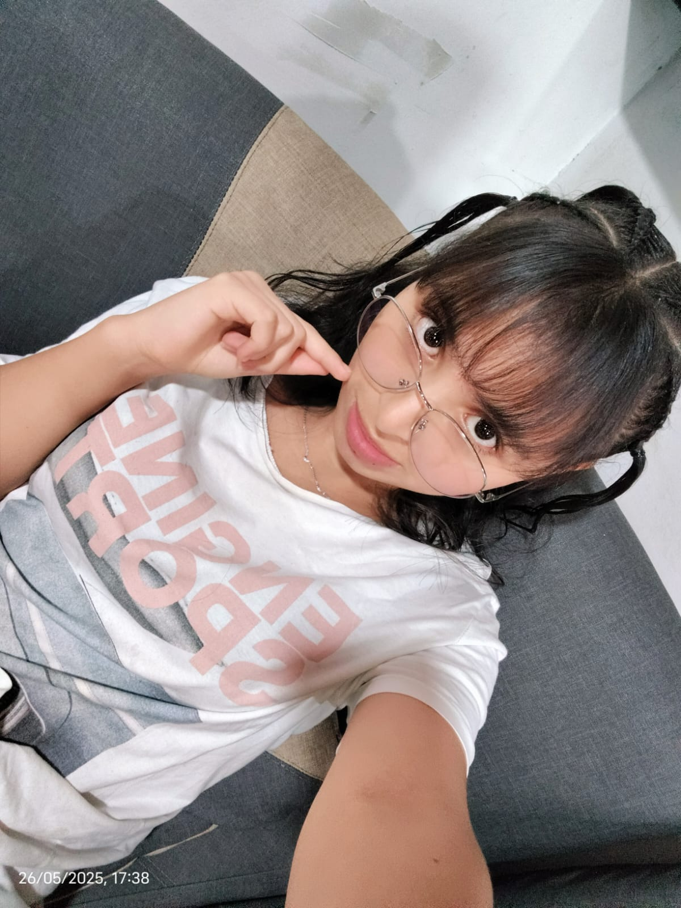

Nuestro Equipo
JOSEPH YOTAGRI RUIZ
Desarrollador Front-End apasionado por la animación y las interfaces limpias. Encargado de diseño y experiencia de usuario.

LUIS ANGEL HERRERA VARGAS
Especialista en back-end y bases de datos. Responsable de la lógica y funcionalidad detrás de cada sección.

YAKELIN DAIHANA GRANADA AGUIRRE
Diseñadora gráfica y editora de contenido. Se encarga del aspecto visual, redacción y coherencia estética.
Misión
Informar y educar a los fans del anime sobre las mejores apps disponibles, facilitando el acceso a contenido legal y de calidad.
Visión
Convertirse en la plataforma de referencia para descubrir, comparar y votar por apps de anime, promoviendo una comunidad global apasionada.